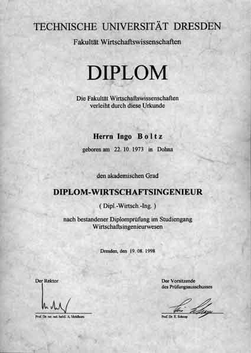

| Home |
| I-Files |
| Guestbook |
TU Dresden — Masters Degree Diploma
Awarded 1998 after six years at the Dresden University of Technology, with an exchange year at Boston University and the thesis fieldwork conducted at the IMEC Institute in Leuven, Belgium.
You may also download the complete diploma (PDF), or compare my results with the TU Dresden 1998 GPA Averages.
